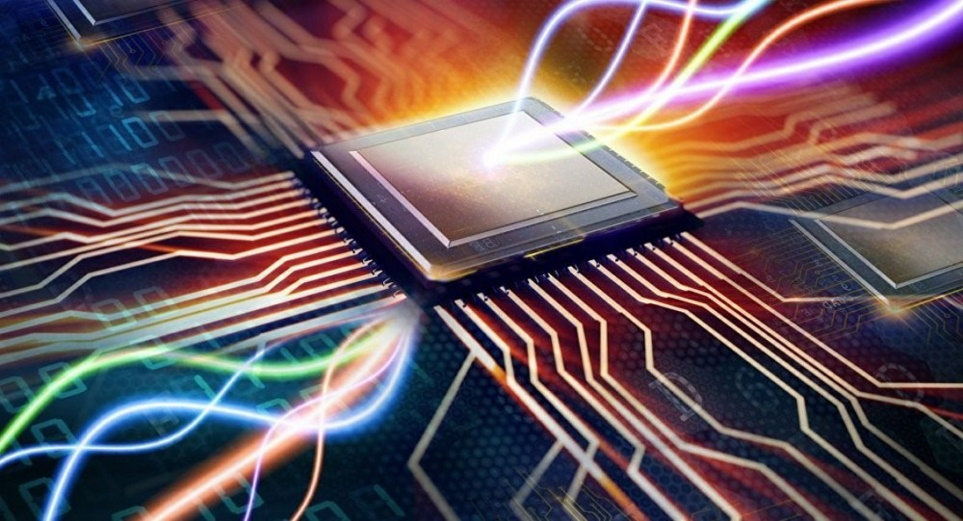

Оптические компьютеры
-
Новые модели жестких дисков Exos Mach.2
Идея построения оптического компьютера давно волнует исследователей. Уже многие устройства компьютеров используют оптику в своем составе: сканеры, дисплеи, лазерные принтеры, оптические диски CD-ROM и DVD-ROM (Digital Versatile Disk) — цифровые универсальные диски.
Появились и успешно работают оптоволоконные линии связи. Остается разработать устройство обработки информации с использованием световых потоков. Способность света параллельно распространяться в пространстве дает возможность создавать параллельные устройства обработки. Это позволило бы намного порядков ускорить быстродействие компьютеров.
Пока отсутствуют проекты создания чисто оптических процессоров, но уже проводятся эксперименты по проектированию оптоэлектронных и оптонейронных отдельных устройств. В связи с появлением многоядерных микропроцессоров возникла проблема оперативного обмена данными между ядрами. Тут же фирмы Intel и IBM откликнулись решениями внедрить микросхемы гибридного кремниевого лазера в каналы передачи информации между ними. Появились работы, связанные с буферизацией световых сигналов, с использованием устройств торможения света. Это позволяет использовать в компьютерах коммутационные световые элементы для достижения более высокой производительности.